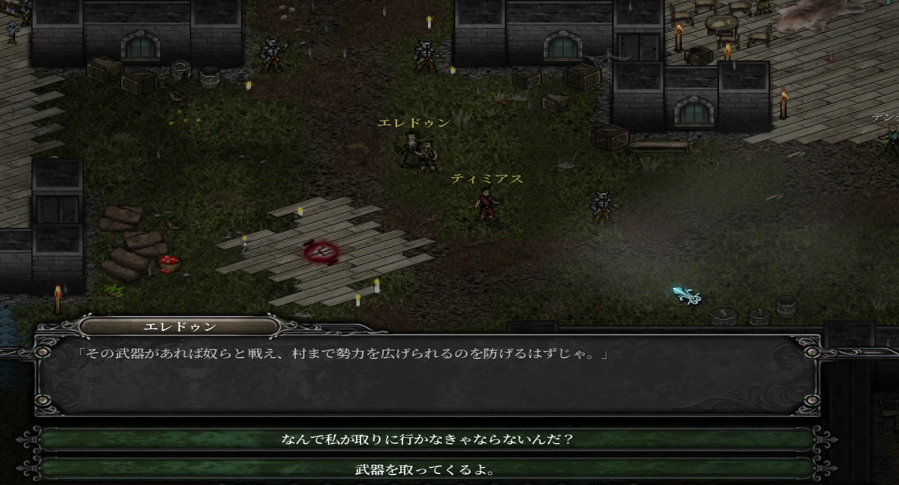
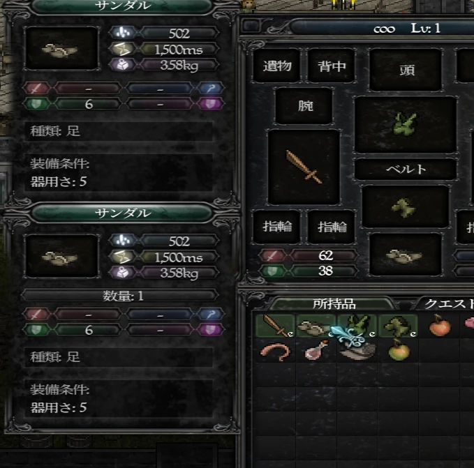
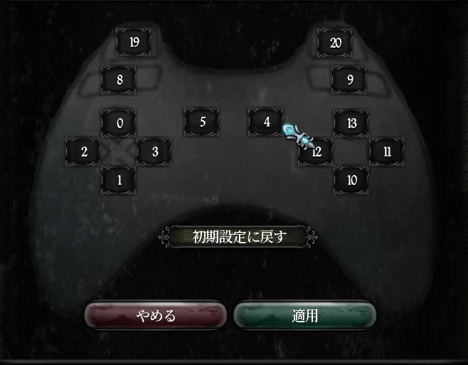

スクリーンショット



日本語化される範囲
- NPC との会話、選択肢
- アイテム名と説明、装備画面、ステータス、魔法・技能
- クエスト、書物、チュートリアル、看板
- メニュー、設定画面、起動時のランチャー画面
- システムメッセージ（経験値・アイテム取得・レベルアップなど）
- 日本語の行頭・行末の禁則処理にも対応
導入方法
- リリースページから zip をダウンロードして展開します。
- Steam のライブラリで 9th Dawn II を右クリック →「管理」→「ローカルファイルを閲覧」で、ゲームフォルダ（
ninthdawnii.exeがあるフォルダ）を開きます。 - zip の中の
version.dllとjpフォルダを、ゲームフォルダにそのままコピーします。ninthdawnii.exeとversion.dllが同じフォルダに並べば正しく導入できています。 - いつもどおり Steam からゲームを起動します。
解除するには ゲームフォルダの version.dll を削除してください（jp フォルダも削除して構いません）。
日本語にならないとき
ゲームを一度起動したあと、ゲームフォルダの jp フォルダに jpfix.log ができているか確認してください。
jpfix.log がない場合（パッチが読み込まれていません）
version.dllがninthdawnii.exeと同じフォルダにあるか確認してください。zip を展開してできたフォルダごとコピーすると動きません。- ウイルス対策ソフトが
version.dllを削除・隔離していないか確認してください。 - Steam Deck / Linux（Proton）では、ゲームのプロパティの起動オプションに
WINEDLLOVERRIDES="version=n,b" %command%を入力してください。
jpfix.log がある場合
- 「バイト不一致」と書かれていれば、ゲームのバージョンが対応版と違います（ベータ版ブランチを選んでいないかも確認してください）。
- それ以外の場合は、
jpfix.logの内容を添えて Issues でお知らせください。
対応バージョン
Steam 版 9th Dawn II（Steam ビルドID 1411474）
ninthdawnii.exe SHA-256: 74b59f8a297727cad84a42dec53fed78b3f5ac4cfbfaa2c9d54b1ba74c8a69e3
ゲーム本体が更新されて内容が変わった場合、パッチは安全のため自動的に無効になり、英語のまま起動します（ゲームが壊れることはありません）。
既知の問題
- ランチャーの「PLAY GAME」とタイトルロゴは画像のため英語のままです。
- まだ確認できていない場面に、英語のまま残る文がある可能性があります。
- キャラクター名には日本語を使えません（入力は英字のみ）。
- 翻訳に不自然な箇所や誤訳が含まれる可能性があります。
英語のまま残った文や誤訳を見つけたら、Issues で教えてください。jp\config.ini の dump_untranslated=0 を 1 にすると、訳がなかった文が jp\untranslated.txt に記録されます。
権利・免責
- 「9th Dawn II」の著作権は Valorware に帰属します。本パッチは非公式のもので、Valorware および Valve（Steam）とは関係ありません。本パッチについて Valorware へ問い合わせないでください。
- 本パッチはゲームのファイルを含まず、改変もしません。翻訳辞書は照合用のキーに原文のハッシュ値を使っており、原文テキストは含みません。
- 本パッチの使用によって生じたいかなる損害についても、作者は責任を負いません。ご利用は自己責任でお願いします。
- 日本語フォント画像は「Noto Serif JP」（© 2017-2023 Adobe、SIL Open Font License 1.1）から作成しています。ライセンス全文は配布 zip 内の
licensesフォルダにあります。